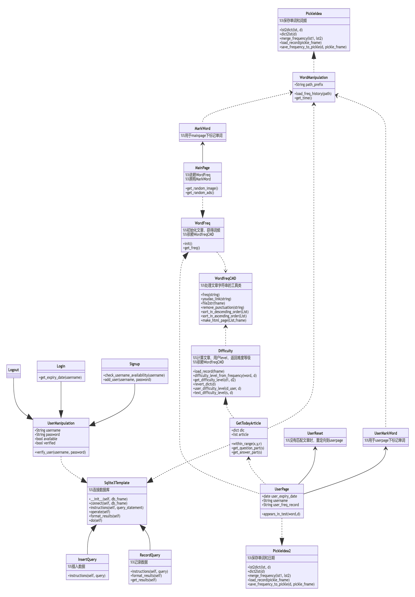

Lab1–Dependency Analysis and Dependency Graph¶
- 小组成员信息
毛顿 20183690024
欧洲 201836900207
杨晗涵 201836900210
刘威 201836900222
来锦涛 201836900220
- 项目GitHub地址
- 项目Read The Docs地址
Abstract¶
借助相关开源软件对EnglishPal进行依赖分析。
Introduction¶
EnglishPal是一款致力于为用户提供方便快捷英语学习服务的网页应用。它提供了“单词本”的功能，可供用户查找添加单词，并根据用户的实际英语水平为其推荐合适难度的英语文章。
此次实验我们主要对EnglishPal的体系结构进行分析。一方面从模块构造的角度，探讨该软件文件间的依赖关系;另一方面从类/函数的角度，深入剖析文件内部类与函数的相互作用，理解软件的运行逻辑。
Materials and Methods¶
Materials¶
Snakefood 一款轻量的Python代码依赖分析画图软件
Graphviz Online 基于 Graphviz 的绘图网页
Mermaid Live Editor 在线多功能图形绘制网页
Methods¶
借助开源软件，分析并绘制出模块依赖图。
阅读源码，手动绘制类与函数的依赖图并简单描述。
对软件进行调试运行，加深理解。
Results¶
模块层（module-level）¶
snakefood.dot:
# This file was generated by sfood-graph.
strict digraph "dependencies" {
graph [
rankdir = "LR",
overlap = "scale",
size = "8,10",
ratio = "fill",
fontsize = "16",
fontname = "Helvetica",
clusterrank = "local"
]
node [
fontsize=12
shape=ellipse
// style=filled
// shape=box
];
// node [
// fontsize=7
// style=ellipse
// ];
"UseSqlite.py" [style=filled];
"UseSqlite.py" -> "sqlite3";
"WordFreq.py" [style=filled];
"WordFreq.py" -> "wordfreqCMD.py";
"WordFreq.py" -> "string.py";
"difficulty.py" [style=filled];
"difficulty.py" -> "wordfreqCMD.py";
"difficulty.py" -> "math";
"difficulty.py" -> "pickle.py";
"main.py" [style=filled];
"main.py" -> "UseSqlite.py";
"main.py" -> "WordFreq.py";
"main.py" -> "difficulty.py";
"main.py" -> "pickle_idea.py";
"main.py" -> "pickle_idea2.py";
"main.py" -> "wordfreqCMD.py";
"main.py" -> "datetime";
"main.py" -> "glob.py";
"main.py" -> "os.py";
"main.py" -> "random.py";
"pickle_idea.py" [style=filled];
"pickle_idea.py" -> "pickle.py";
"pickle_idea2.py" [style=filled];
"pickle_idea2.py" -> "datetime";
"pickle_idea2.py" -> "pickle.py";
"wordfreqCMD.py" [style=filled];
"wordfreqCMD.py" -> "pickle_idea.py";
"wordfreqCMD.py" -> "collections.py";
"wordfreqCMD.py" -> "operator";
"wordfreqCMD.py" -> "os.py";
"wordfreqCMD.py" -> "string.py";
"wordfreqCMD.py" -> "sys";
}
依赖图（由Graphviz Online生成）

类/函数层（class-function-level）¶
mermaid.txt:
classDiagram
WordFreq ..> WordfreqCMD
WordfreqCMD <.. Difficulty
Sqlite3Template <|-- InsertQuery
Sqlite3Template <|-- RecordQuery
WordManipulation <.. GetTodayArticle
GetTodayArticle ..|>Sqlite3Template
Difficulty <|.. GetTodayArticle
MainPage ..|> WordFreq
WordManipulation <.. MarkWord
PickleIdea <|.. WordManipulation
MarkWord <-- MainPage
UserMarkWord <-- UserPage
UserReset <-- UserPage
GetTodayArticle <.. UserPage
UserPage ..|> PickleIdea2
WordFreq <|.. UserPage
WordManipulation <.. UserMarkWord
Signup --|> UserManipulation
Login --|> UserManipulation
Logout --|> UserManipulation
UserManipulation ..|>Sqlite3Template
Sqlite3Template <|-- InsertQuery
Sqlite3Template <|-- RecordQuery
class PickleIdea{
%%保存单词和词频
+lst2dict(lst, d)
+dict2lst(d)
+merge_frequency(lst1, lst2)
+load_record(pickle_fname)
+save_frequency_to_pickle(d, pickle_fname)
}
class PickleIdea2{
%%保存单词和日期
+lst2dict(lst, d)
+dict2lst(d)
+merge_frequency(lst1, lst2)
+load_record(pickle_fname)
+save_frequency_to_pickle(d, pickle_fname)
}
class WordfreqCMD{
%%处理文章字符串的工具类
+freq(string)
+youdao_link(string)
+file2str(fname)
+remove_punctuation(string)
+sort_in_descending_order(List)
+sort_in_ascending_order(List)
+make_html_page (List,fname)
}
class WordFreq{
%%初始化文章，获得词频
%%依赖WordfreqCMD
+init()
+get_freq()
}
class Difficulty{
%%计算文章、用户level，返回难度等级
%%依赖WordfreqCMD
+load_record(fname)
+difficulty_level_from_frequency(word, d)
+get_difficulty_level(d1, d2)
+revert_dict(d)
+user_difficulty_level(d_user, d)
+text_difficulty_level(s, d)
}
class WordManipulation{
+String path_prefix
+load_freq_history(path)
+get_time()
}
class GetTodayArticle{
+dict dic
+list article
+within_range(x,y,r)
+get_question_part(s)
+get_answer_part(s)
}
class MainPage{
%%依赖WordFreq
%%拥有MarkWord
+get_random_image()
+get_random_ads()
}
class MarkWord{
%%用于mainpage下标记单词
}
class UserPage{
+date user_expiry_date
+String username
+String user_freq_record
+appears_in_test(word,d)
}
class UserReset{
%%没有匹配文章时，重定向到userpage
}
class UserMarkWord{
%%用于userpage下标记单词
}
class UserManipulation{
+String username
+String password
+bool available
+bool verified
+verify_user(username, password)
}
class Signup{
+check_username_availability(username)
+add_user(username, password)
}
class Login{
+get_expiry_date(username)
}
class Logout{
}
class Sqlite3Template{
%%连接数据库
+__init__(self, db_fname)
+connect(self, db_fname)
+instructions(self, query_statement)
+operate(self):
+format_results(self)
+do(self)
}
class InsertQuery{
%%插入数据
+instructions(self, query)
}
class RecordQuery{
%%记录数据
+instructions(self, query)
+format_results(self)
+get_results(self)
}
依赖图（由Mermaid Live Editor生成）
Discussions¶
依赖分析¶
业务逻辑
main.py中，我们将类别大致分为（1）单词操作类WordManipulation、（2）文章操作类GetTodayArticle、两个页面类（3）Mainpage和（4）Userpage以及（5）用户类UserManipulation.
在页面类中，MarkWord作为在Mainpage页面下标记单词，仅服务于Mainpage，二者是拥有者与被拥有者的关系;
同样，UserMarkWord作为在Userpage页面下标记单词和UserReset在用户没有匹配文章时重定向回Userpage，仅服务于Userpage，也是拥有者与被拥有者的关系。 Userpage中还需显示匹配的文章，要用到WordManipulation，因此Userpage依赖于WordManipulation，是使用者与被使用者的关系。
WordManipulation作为对单词的操作类，拥有load_freq_history、get_time等方法，用于加载词频、获取时间。 而MarkWord、UserMarkWord、GetTodayArticle三个类作为页面中对单词进行操作都依赖于WordManipulation，是使用者与被使用者的关系。
在用户类中，UserManipulation具有用户的基本信息：username、password等，以及验证用户名和密码是否通过，用户的操作如Signup、Login、Logout都作为子类继承UserManipulation，实现具体功能。
文章推荐与单词统计
新建一个WordfreqCMD类，做为一个工具类，提供处理字符串、列表的方法。
WordFreq类依赖于WordfreqCMD类，init初始化方法预处理文章，用WordfreqCMD的remove_punctuation方法删去字符串中的标点；get_freq依赖WordfreqCMD的sort_in_descending_order方法，返回一个降序后的词频列表。
Difficulty类用于计算一篇英文文章的难度等级，user_difficulty_level方法可以计算用户等级，其依赖于WordfreqCMD的sort_in_ascending_order方法；text_difficulty_level方法可以计算文章的难度等级，其依赖于WordfreqCMD的freq方法、sort_in_descending_order方法和remove_punctuation方法。
信息查找、存储与更新
sqlite3template 类用于连接数据库，其中有insertquery和recordquery两个子类，用于插入和记录数据。 pickle_idea和pickle_idea2两个类之间没有依赖关系，分别用于单词和词频的记录与单词和日期的记录。load_record方法加载pickle文件，save_frequency_to_pickle方法将数据保存到pickle文件中,merge_frequency方法用于合并两个list。
整体依赖关系
main.py中的单词操作类WordManipulation以PickleIdea作为接口，使用了其中的load_record函数获取单词记录，WordManipulation中的markword方法使用merge_frequency添加单词记录
MainPage类实现了WordFreq类，即WordFreq类是MainPage的接口，MainPage类中创建了一个WordFreq对象，使用该对象的get_freq函数获取单词记录频率。
Sqlite3Template类分别是UserManipulation类和GetTodayArticle类的接口： UserManipulation类使用InsertQuery方法注册用户，使用RecordQuery方法验证用户名密码服务于用户登录SignUp，同时也是用这个方法检验用户注册是用户名是否重复。 GetTodayArticle类使用RecordQuery方法从数据库获取文章。
Difficulty类是GetTodayArticle类的接口，GetTodayArticle类使用get_difficulty_level方法获取当前单词频率情况的等级，使用text_difficulty_level方法获取文章等级，使用user_difficulty_level方法计算用户等级。
PickleIdea2类是UserPage类的的接口，UserPage类使用dict2lst获取历史单词频率，使用merge_frequency新增不认识的词汇，使用save_frequency_to_pickle将新增单词保存到pickle。
利弊分析¶
界面操作
一些文字提示与其所对应的操作之间指示性不强，如主页中“试试”是注册用户操作，这既与上面的“成为会员”操作重复，且含义不明显，用户可能误解为登录操作等。
注册账户与登录操作中密码无法可视化，用户难以确认是否有打字错误。
登录有误（login中verified为false）时，页面只显示“无法通过验证”，无进一步登录提示，用户只能通过网页上的返回上一页面操作来重新登录。
用户注册成功后，跳转的页面所含的功能有些重复且指向性不明确。如”你的用户名是XXX“，用户点击该用户名可跳转至用户页面，这与后面的”开始使用“功能一致，这里单纯显示用户名较好。且”开始使用“相对于”返回主页“也有些意味不明，改为”用户中心“等较好。
代码逻辑
mainpage中”粘贴一篇文章“中输入文章并点击”get文章中的词频“后,后台已对这篇文章中的词汇进行了统计与合并（即对frequency.p进行了修改）;但当用户在跳转的页面中对词汇进行勾选（即“mark”该单词）并点击“确认并返回”时，后台又对这些“marked”的词汇进行了统计，重复统计，意味不明。
体系结构
EnglishPal的模块化虽然纵向维度不深，但在横向维度上较好的将各个功能从主要的业务逻辑中抽离出来，在main.py中有条不紊的调用各分模块的功能，使得整体结构较为清晰。
整体采用了经典的MVC网页应用体系结构，使得显示层、业务层与数据层彼此间相互较为独立，利于进一步的功能开发。
在业务逻辑代码中嵌入了大量的网页显示代码，不仅使得分析代码与维护软件困难，更提高了更新应用的难度。
References¶
暂时没有引用。